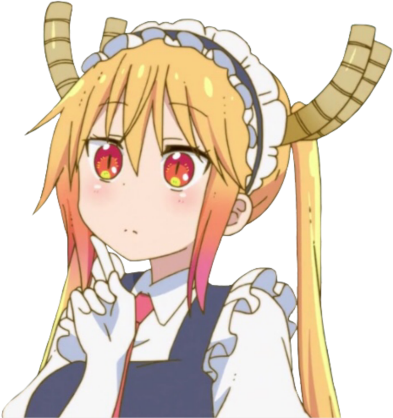
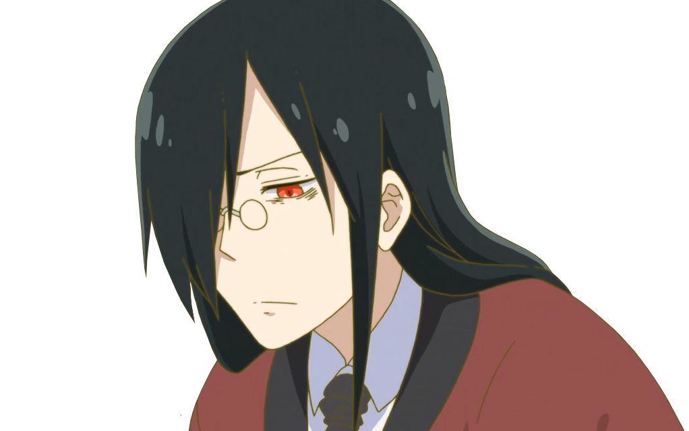

Kobayashi-san Chi no Maid Dragon é uma série japonesa de mangá escrita e ilustrada por Coolkyoushinja

Tohru A Tohru é uma das personagens principais de Kobayashi-san Chi no Maid Dragon. Ela é uma dragão fêmea com a habilidade de se transformar em uma garota humana. Quando Kobayashi a resgata, ela se apaixona por ela e decide trabalhar para ela como empregada doméstica.
Em sua forma humana, possui longos cabelos loiros com pontas laranja flamejantes e olhos laranja-avermelhados com pupilas dilatadas. Ela magicamente transforma suas escalas em uma roupa de empregada, copiando então o uniforme de um café cosplay de empregada doméstica (Maid Cafe Cosy) depois de voar para o apartamento de Kobayashi pela primeira vez.

Kobayashi Kobayashi é a protagonista do anime, e trabalha como programadora de computador na Jigokumeguri System Engineering Inc.
É uma jovem mulher de óculos com cabelo ruivo brilhante que está sempre amarrado em um rabo de cavalo e com os olhos castanhos. Ela é conhecida por ter uma característica física que a frustra a ponto de reclamar dos amplos bustos das dragões quando estão em suas formas humanas. Inclusive, em um momento em que estava bêbada, ela já exigiu que Tohru ou Lucoa compartilhassem algumas de suas “bênçãos” com ela.

Kanna Kanna tem fala mansa e quieta e demonstra a maioria de suas emoções por meio de expressões minuciosas. Apesar de ser tecnicamente mais velha do que seus colegas, não se comporta de maneira diferente de uma criança humana, pois se cansa facilmente da rotina e gosta de jogar. De acordo com Tohru, ela é bastante travessa e gosta de pregar peças, embora isso tenha sido um esforço inútil para obter a atenção de seus pais. Quando Kanna chega ao mundo moderno, ela inicialmente fica desconfiada ou curiosa sobre a maioria dos pertences do mundo moderno, mas revela que gosta de muitas coisas que descobre.

Elmaé uma das personagens coadjuvantes de Kobayashi-san Chi no Maid Dragon S, sendo uma dragão aquático fêmea da facção harmonia, a facção oposta do Caos à qual Tohru pertence. Ela adota o nome de Elma Joui como seu apelido humano após descobrir que é incapaz de retornar ao mundo dos dragões.
TakiyaMakoto é amigo de Kobayashi e colega de trabalho na Jigokumeguri System Engineering Inc.
Falando então de sua aparência, ele é um homem alto e esguio, possuindo cabelo preto e olhos azuis escuros. Seu traje de escritório normalmente consiste em uma camisa de botão branca, calças escuras, uma gravata azul e sapatos de couro marrom.
Após voltar ao seu eu otaku, ele coloca um par de óculos com espirais nas lentes e de alguma forma desenvolve dentes salientes. Além disso, sua voz também fica um pouco mais aguda.
FafnirFafnir ou Takeshi Ooyama é um dos personagens coadjuvantes de Kobayashi-san Chi no Maid Dragon S, e é companheiro de quarto e amigo de Makoto Takiya.
Em sua forma humana, o personagem aparece como um jovem com cabelo preto longo e liso com franja cobrindo o olho direito, usando óculos e olhos vermelhos que podem mudar de cor e tamanho dependendo da raiva. Ele tem um comportamento calmo e controlado que reflete seu rosto ligeiramente sombrio. O personagem é visto principalmente em seu traje de mordomo.

Ilulu é uma dragão fêmea que pertence à Facção do Caos dos Dragões. Originalmente, ela veio ao mundo de Kobayashi para destruir Tohru e então tenta expulsar Kobayashi de Tohru. Após uma mudança no coração, ela começa a viver com Kobayashi como seu terceiro dragão residente.
A Saikawa é uma das personagens secundárias de Kobayashi-san Chi no Maid Dragon S, sendo então amiga e colega de classe de Kanna Kamui.
A garotinha tem cabelos castanhos ondulados na altura dos ombros, olhos verdes escuros, geralmente veste uma camisa verde de mangas compridas e uma estampa coelho, uma saia laranja clara, meias altas brancas e sapatos verdes.
Shouta Shouta é um dos personagens coadjuvantes de Kobayashi-san Chi no Maid Dragon S. Ele é um menino nascido em uma família de magos do mundo moderno. Ele é garoto do ensino fundamental com cabelos e olhos roxos, sua franja chega bem abaixo das sobrancelhas e sua aparência é um tanto andrógina.

Lucoa Quetzalcoatl, muitas vezes referida como Lucoa, é uma personagem coadjuvante de Kobayashi-san Chi no Maid Dragon S. Ela é uma ex-deusa dragão que foi exilada de seu assento após consumir um licor amaldiçoado que a levou a entrar em um caso escandaloso. A personagem é uma velha amiga de Tohru.
Em sua forma humana, ela é uma mulher alta, com a pele clara e com cabelos loiros longos e ondulados. E além disso, ela tem heterocromia, onde uma íris tem uma coloração diferente da outra. Como Tohru, Quetzalcoatl mantém seus chifres, mas não retém sua cauda ou decide mantê-la escondida.
A personagem parece ser descontraída e despreocupada, raramente vista sem um sorriso. Ela é sábia, gentil e carinhosa, e muitas vezes dá conselhos para os mais jovens.

Developed by Eduardo
Site desenvolvido para trabalho escolar no curso tecnico Desenvolvimento de Sistema. Na Etec Sapopema. Localicado na Fazenda da Juta, São Paulo, Zona Leste.